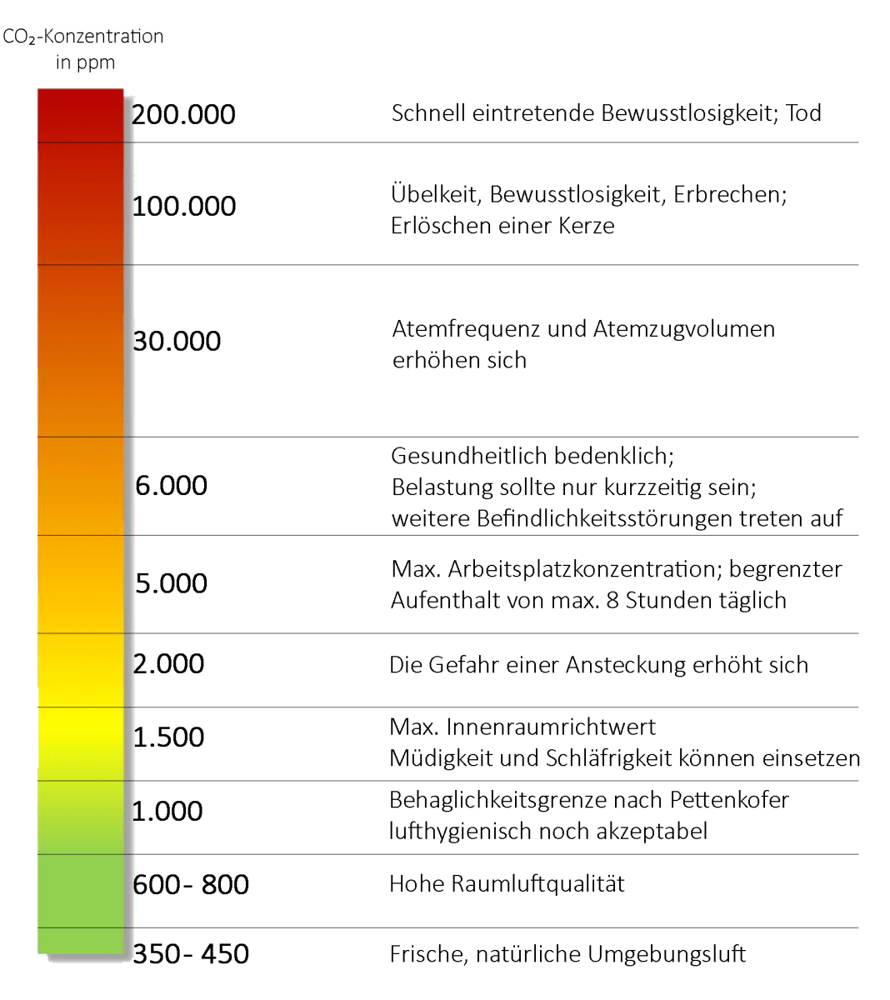
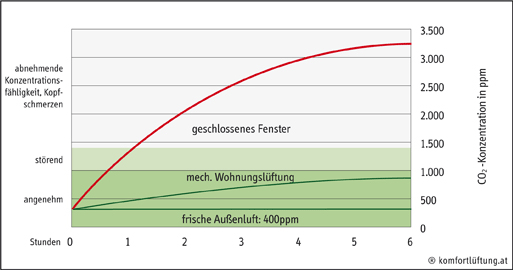
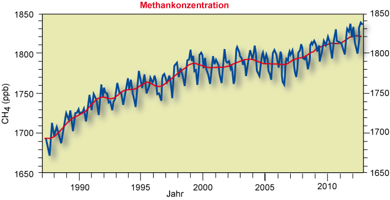
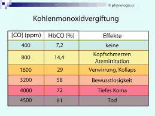

Was bedeutet PPM?

Bei der Messung von Gasen wie Kohlendioxid, Sauerstoff oder Methan wird der Begriff Konzentration verwendet, um die Volumenmenge eines Gases in der Luft zu beschreiben. Die 2 gebräuchlichsten Maßeinheiten sind Teile pro Million und prozentuale Konzentration.
Teile pro Million (abgekürzt ppm) ist das Verhältnis von einem Gas zu einem anderen. Zum Beispiel bedeutet 1.000 ppm CO, dass, wenn Sie eine Million Gasmoleküle zählen könnten, 1.000 davon Kohlenmonoxid und 999.000 Moleküle andere Gase wären.
Luftqualität hat einen enormen Einfluss auf die menschliche Lebensqualität, so war alleine in Indien die Luftverschmutzung 2017 für 1,2 Mio. Todesfälle verantwortlich.
CO2

Außenluft hat üblicherweise eine CO2-Konzentration von etwa 400 ppm. Ein menschlicher Atemzug enthält etwa 30.000 ppm. Kohlendioxidkonzentrationen von mehr als 20.000 ppm können zu Husten führen. Konzentrationen von über 100.000 ppm rufen Bewusstlosigkeit und Zittern hervor.
Werte von mehr als 250.000 ppm werden zur tödlichen Gefahr, da sich die hohen Konzentrationen im Körper entweder wie Gift verhalten oder den Sauerstoff aus der Blutbahn verdrängen. Zu viel Kohlenstoffdioxid kann tödlich sein, die Produktivität verringern und auch die Konzentrationsfähigkeit senken.
METHAN
Methan gehört zu den Treibhausgasen, die in der Atmosphäre Strahlung aufnehmen und die Luft erwärmen.
Methan ist nach Kohlendioxid das zweitwichtigste vom Menschen verursachte Treibhausgas. Betrachtet man dieselbe Masse von Methan und Kohlendioxid (z.B. 1 kg), hat es sogar eine 28 Mal so starke Treibhauswirkung wie Kohlendioxid. Durch die Freisetzung aufgrund von menschlichen Aktivitäten stieg die Konzentration des Spurengases in der Atmosphäre beträchtlich.
Während der letzten 650.000 Jahre lag der Wert zwischen 400 Teilchen pro Milliarde Luftteilchen (englisch: parts per billion, kurz ppb) in den Kaltzeiten und 700 ppb in den warmen Zwischeneiszeiten.
In der vorindustriellen Zeit ‐ also vor 1750 ‐ waren es 722 ppb. Im Jahr 2021 hat sich die Konzentration auf 1866 ppb mehr als verdoppelt und steigt pro Jahr um ein bis zwei Prozent weiter.
RAUCH
Der durchschnittliche CO-Wert eines Nichtrauchers liegt bei 2ppm. Werte bis 5 ppm sind bei
Nichtrauchern üblich. Werte zwischen 6 und 10 sind seltener, lassen auf eine Belastung durch Kohlenmonoxid
in der Umwelt schließen. Werte über 10 ppm sind bei Nichtrauchern bedenklich. Der durchschnittliche Wert von Rauchern liegt bei 33 ppm CO. Starke Raucher erreichen Werte
über 50 ppm CO, Jedoch auch erst im Tagesverlauf mit zunehmender Zahl gerauchter Zigaretten.
TOLUENE
Menschen können sowohl drinnen als auch draußen Toluol ausgesetzt werden, indem sie Autoabgase einatmen, Benzin pumpen, Verzehr von kontaminierten Lebensmitteln oder Wasser oder Verwendung anderer Produkte, die Toluol enthalten, wie Kerosin, Heizöl, Farben und Lacke. In der Arbeitsumgebung können Menschen Toluol durch Einatmen kontaminierter Luft oder durch Hautkontakt ausgesetzt werden.
Die Exposition gegenüber niedrigen bis mäßigen Konzentrationen kann Müdigkeit, Verwirrtheit, Schwäche, Gedächtnisverlust, übelkeit, Appetitlosigkeit und Hör- und Farbsehverlust verursachen. Die Exposition gegenüber hohen Konzentrationen kann zu Bewusstlosigkeit und sogar zum Tod führen. Je mehr Schadstoffe sich in der Luft befinden, desto schlechter ist das für unsere Gesundheit: Die Atemwege können erkranken, Kreislauf und Gehirn werden geschädigt. Nicht nur Mensch und Tier leiden unter der verschmutzten Luft, auch Pflanzen nehmen Schaden.
NH4
Ammonium (NH4)-Aerosole werden als Feinstaub bezeichnet und haben nur eine Größe von 2,5 Mikron. Die geringe Größe von PM2,5-Partikeln ermöglicht es ihnen, durch Einatmen in die Lunge und den Blutkreislauf einzudringen. Ammoniumpartikel können dann Komplikationen wie Asthma , Lungenkrebs , Herz-Kreislauf-Probleme, Geburtsfehler und vorzeitigen Tod beim Menschen verursachen.
ACETONE
Aceton ist eine hergestellte Chemikalie, die auch natürlich in der Umwelt vorkommt. Es ist eine farblose Flüssigkeit, die leicht verdunstet, sich in Wasser auflöst und brennbar ist. Menschen können Aceton ausgesetzt werden, indem sie es einatmen, einnehmen oder über die Haut aufnehmen. Es ist in Fahrzeugabgasen, Tabakrauch und vielen Deponien vorhanden. Im Haushalt können Menschen Aceton ausgesetzt werden, indem sie Nagellackentferner, Haushaltsreiniger, Farben, Klebstoffe, Gummizement, Spanplatten oder andere Produkte verwenden, die Aceton enthalten.
Das Trinken von Wasser oder das Essen von acetonhaltigen Lebensmitteln ist ein weiterer Expositionsweg. Das kurzzeitige Einatmen mäßiger bis hoher Konzentrationen kann zu Reizungen von Nase, Rachen, Lunge und Augen führen. Es kann auch Vergiftungen, Kopfschmerzen, Müdigkeit, Benommenheit, Benommenheit, Schwindel, Verwirrung, erhöhte Pulsfrequenz, Übelkeit, Erbrechen und andere Zustände verursachen.
CO
 Kohlenstoffmonoxid (CO) bezeichnet eine einfache anorganische Verbindung zwischen Kohlenstoff und Sauerstoff. Es handelt sich um ein farb-, geruch- und geschmackloses Gas. Mit Sauerstoff verbrennt es in blauer, durchsichtiger Flamme zu Kohlenstoffdioxid. Das Gas ist ein gefährliches Atemgift. Gelangt es z.B. durch das Rauchen von Tabak in den Blutkreislauf, bindet sich Kohlenmonoxid ca. 210-mal stärker als Sauerstoff an das im Blut befindliche Hämoglobin.
Dadurch kann der Sauerstofftransport nachhaltig gestört werden und eine fatale Kohlenmonoxidvergiftung hervorgerufen werden. Schon eine Sättigung von 1,28 % Kohlenstoffmonoxid in der Raumluft führt innerhalb von ein bis zwei Minuten zum Tod. Die normale Konzentration des CO in der Luft beträgt ca. 0,6 bis 6 mg/m³.
H2
Wasserstoff ist auf der Erde das am häufigsten vorkommende Element - immer gebunden etwa in Wasser oder mit Kohlenstoff. Mit Sauerstoff verbrennt das Gas nahezu rückstandsfrei, ohne Asche oder klimaschädliche Abgase zu Wasserdampf. Wasserstoff kann sehr flexibel, insbesondere aus erneuerbaren Energiequellen erzeugt und vielfältig genutzt werden, zum Beispiel als Treibstoff für Fahrzeuge, als Brennstoff für Heizungen oder als Rohstofflieferant für industrielle Prozesse.
BRENNBARE GASE
Gassensoren sind Sensoren zur Detektion gasförmiger Substanzen. Sie zählen dadurch zu den Chemosensoren. Chemische Informationen in der Umgebungsluft werden von Gassensoren in elektrische Signale umgewandelt. Gassensoren bzw. chemische Sensoren stehen in direkter Wechselwirkung mit der Umgebung. In Bezug auf die Luftqualität sind diese Daten wichtig, da dadurch die Methan- und Kohlenstoffmonoxid-Detektion sowie eine personengebundene Kohlenstoffmonoxid- und Schwefelwasserstoff-überwachung durchgeführt werden kann.